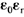
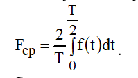
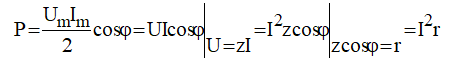
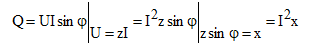
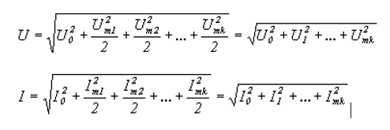
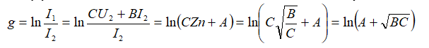

Модуль-1
Модуль-2
1. Электромагнитные поля могут быть описаны интегральными или дифференциальными соотношениями. Интегральные соотношения относятся к объему (длине, площади) участка поля конечных размеров, а дифференциальные - к участку поля физически бесконечно малых размеров. Они выражаются операциями градиента, дивергенции, ротора.
В электростатическом поле поток вектора напряженности электрического поля через замкнутую поверхность (рис. 1.1) равен свободному заряду , находящемуся внутри этой поверхности, деленному на  (теорема Гаусса): (1.1) где - элемент поверхности, направленный в сторону внешней нормали к объему; - относительная диэлектрическая проницаемость диэлектрика.
В дифференциальной форме теорема Гаусса записывается так: (1.2) ( - объемная плотность свободного заряда, Кл/м3)
Физически означает исток вектора в данной точке
В электростатическом поле и в стационарном электрическом поле на заряд q действует сила . Отсюда следует, что может быть определена как силовая характеристика поля . Если q под действием сил поля переместится из точки 1 в точку 2 (рис. 1.2), то силы поля совершат работу , где - элемент пути из 1 в 2. Под разностью потенциалов U12 между точками 1 и 2 понимают работу, совершаемую силами поля при переносе заряда q = 1 Кл из точки 1 в точку 2, (1.3) U12 не зависит от того, по какому пути происходило перемещение из точки 1 в точку 2. Выражению (1.3) соответствует дифференциальное соотношение (1.4) Градиент φ (grad φ) в некоторой точке поля определяет скорость изменения φ в этой точке, взятую в направлении наибольшего его возрастания. Знак минус означает, что и grad φ направлены противоположно.
Источник ЭДС - двухполюсник, напряжение на зажимах которого не зависит от тока, протекающего через источник и равно его ЭДС. Идеальный источник тока представляет собой активный элемент, ток которого не зависит от напряжения на его зажимах.
Ветвь – это участок цепи между двумя смежными узлами. По ветви протекает один ток.
Узел – это место схождения трех и более ветвей.
Контур – это замкнутый путь прохождения тока, состоящий из нескольких ветвей.
Независимый контур – это контур в который входит хотя бы одна новая ветвь.
Модуль-3
1. Закон Ома для участка цепи с ЭДС. Закон Ома для участка содержащего ЭДС Позволяет определить ток этого участка по известным величинам ЭДС и напряжения этого участка. Рассмотрим рис.2.10
Дано
Найти: I
(*) - закон Ома для участка цепи с Э.Д.С. закон Ома для участка цепи с Э.Д.С.
Знаки перед Э.Д.С . в формуле закона Ома зависят от совпадения или несовпадения направлений I и E (рис.2.11).
Первый закон: Алгебраическая сумма токов в узле равна нулю. При этом токам, направленным к узлу, приписывается какой-либо знак (напри¬мер +), а от узла – противоположный.
Второй закон: Алгебраическая сумма ЭДС в любом контуре равна ал¬гебраической сумме падений напряжений в этом контуре.
При записи второго закона Кирхгофа выбирают независимые кон¬туры. Направление обхода контуров выбирается произвольно. ЭДС и паде¬ния напряжения, совпадающие по направлению с направлением обхода, берутся со знаком «+», иначе «–».
В цепях постоянного тока эл. энергия, вырабатываемая источниками, равна энергии, потребляемой приемниками. Резистивные элементы преобразуют эл. Энергию в тепловую, по закону Джоуля-Ленца энергия, потребляемая резистивным элементом сопротивление которого в течение времени t при протекании тока.
Дж - закон Джоуля-Ленца
Мощность в цепи постоянного тока - это способность тока совершать полезную работу.Мощностью называется работа, производимая в одну секунду:
Баланс мощностей является следствием закона сохранения энергии — суммарная мощность вырабатываемая (генерируемая) источниками электрической энергии равна сумме мощностей потребляемой в цепи.
В любой электрической цепи, по закону сохранения энергии, количество вырабатываемой в единицу времени энергии источников должно быть равно потребляемой, то есть электрическая мощность источников должна быть равна мощности потребителей.
Если направление источника ЭДС и тока, протекающего через него, совпадают, то источник отдаёт энергию и произве¬дение EI входит в ле¬вую часть равенства со знаком плюс. В противном случае источник потреб¬ляет энергию и EI берётся со знаком минус.
Если схема содержит источник тока то в общем случае его мощность записывается как падение напряжения на зажимах. Направление передачи энергии зависит от знака напряжения на зажимах источника.
Например, для схемы изображенной на рис.1.7
Модуль-4

Какое фазовое соотношение между синусоидальным напряжением и током в сопротивлении? Положительный угол фи (при индуктивной или активно-индуктивной нагрузке) откладывают от вектора тока против часовой стрелки, отрицательный угол фи (при емкостной или активно-емкостной нагрузке) - по часовой стрелке (рис.15)
Мощность цепи переменного тока имеет три составляющие: реактивные - индуктивнуюQl и емкостную Qc мощности и активную мощность P . Рассмотрим связь между полной мощностью S и ее составляющими. Для последовательной цепи в треугольнике сопротивлений умножаем все стороны треугольника на I . Получим треугольник напряжений (рис.17,b). Если умножить все стороны треугольника сопротивлений на I , получаем треугольник мощностей (рис.17,в).
Рис. 2.1 Аргумент, стоящий под знаком синуса , называется фазой. Она характеризует состояние колебания (то есть его численное значение) в любой момент времени. Значение фазы в момент времени t = 0 называется начальной фазой. Она характеризует состояние колебания (то есть его численное значение) при t = 0. Для обозначения начальных фаз напряжения и тока часто используют буквы B(бэтта) и a(альфа) .
Средним значением за период Т любой периодической функции f (t) называется величина В случае синусоидальной функции среднее значение за период равно нулю, так как площадь положительной полуволны компенсируется площадью отрицательной. В этом случае пользуются средним значением за полупериод: Среднее значение за полупериод показывают электроизмерительные приборы выпрямительной системы.
Тепловое действие тока, а также механическая сила взаимодействия двух проводников, по которым течет один и тот же ток, пропорциональны квадрату тока. Поэтому о величине переменного тока судят по так называемому действующему (среднеквадратичному) значению за период
Активная мощность, рассеиваемая в двухполюснике: Раскрывая, получим 
Множитель называется коэффициентом мощности. Как было показано выше, активная мощность может быть только положительной. Следовательно, коэффициент мощности также всегда больше нуля и
Величина называется полной мощностью. Она соответствует той максимальной активной мощности, которая может быть получена в цепи при заданных действующих значениях напряжения U и тока I. Размерность полной мощности [S] = ВА.
Любая электрическая установка (например, трансформатор, двигатель) проектируетcя и изготавливается на полную мощность S. Однако из-за наличия угла сдвига фаз между напряжением и током расчетная мощность установки S используется не полностью. Отсюда ясна важность высокого значения коэффициента мощности .
Величина  называется реактивной мощностью. Реактивная мощность характеризует скорость передачи электрической энергии от источника энергии к приемнику и обратно.
Реактивная мощность положительна при отстающем токе и отрицательна при опережающем токе . Размерность реактивной мощности [Q] = ВАp.
Пусть источник ЭДС нагружен на сопротивление Z. Известна величина тока в цепи Рассмотрим так называемый сопряженный комплекс тока , аргумент которого (начальная фаза) имеет противоположный знак по сравнению с аргументом исходного тока I .
Обозначим  - комплексная мощность источника. Раскроем последнее выражение
- комплексная мощность источника. Раскроем последнее выражение
Таким образом, активная мощность источника равна действительной части комплексной мощности , а реактивная мощность – мнимой части .
Активная мощность приемников может быть записана с использованием комплексных действующих значений токов и комплексных сопротивлений как , а реактивная мощность - .
Математически баланс активных и реактивных мощностей в комплексной форме можно представить одним выражением. Так, для цепи с источниками ЭДС и тока оно имеет вид Или
Составим для цепи рис. 3.26 баланс мощностей в комплексной форме:
а) комплексная амплитуда напряжения на сопротивлении
б) комплексная амплитуда напряжения на индуктивности
в) комплексная амплитуда напряжения на емкости
Формулы представляют собой закон Ома в комплексной форме записи для отдельных пассивных элементов цепи. Перепишем, с учетом принятых обозначений:
Составим в качестве примера уравнения по законам Кирхгофа для цепи.
Отметим, что в качестве обозначений в схеме рис. 3.5 использованы комплексные действующие значения ЭДС и токов. Направления последних выбраны произвольно.
Первый закон Кирхгофа для узла а: .
Для составления уравнений по второму закону Кирхгофа произвольно выбираем независимые контуры и направления их обхода. Сами уравнения имеют вид
Векторной диаграммой называется совокупность векторов на комплексной плоскости, изображающих синусоидальные функции времени одинаковой частоты и построенных с соблюдением их взаимной ориентации по фазе.
Контурным током будем называть ток контура численно равный току ветви принадлежащей только данному контуру. Сумму всех сопротивлений, принадлежащих контуру, назовем контурным сопротивлением: а сопротивление, одновременно принадлежащее двум контурам, назовем межконтурным сопротивлением: Причем, если контуры ориентированы одинаково по отношению к часовой стрелке, то межконтурное сопротивление имеет знак минус.
Контурной ЭДС назовем алгебраическую сумму всех ЭДС принадлежащих контуру.
ЭДС индукции в замкнутом контуре равна скорости изменения магнитного потока, пронизывающего контур Электромагнитная индукция - это явление возникновения тока в замкнутом проводнике, при прохождении через него магнитного потока
Явление взаимоиндукции наблюдается между близко расположенными катушками. Сущность взаимоиндукции заключается в переносе электрической энергии из одной цепи в другую посредством общего магнитного поля: в одном из контуров электрическая энергия преобразуется в энергию магнитного поля, в другом контуре происходит обратный переход энергии магнитного поля в электрическую энергию. Из сказанного следует, что магнитное поле является переносчиком электрической энергии из одной цепи в другую.
Взаимная индуктивность между двумя катушками зависит от их размеров, числа витков, взаимного расположения и магнитной проницаемости среды.
Резонанс напряжений может возникать в цепях с последовательным соединением участков, содержащих индуктивности и емкости. Примеры таких цепей приведены на рис. 6.2.
Общее условие возникновения резонанса напряжений – равенство нулю входного реактивного сопротивления цепи.
Резонанс токов может возникать в цепях с параллельным соединением участков, содержащих индуктивности и емкости. Примеры таких цепей приведены на рис. 6.11.
Общее условие возникновения резонанса токов – равенство нулю входной реактивной проводимости цепи.
Модуль-5
1. Трехфазной цепью называется совокупность трехфазного генератора, трехфазной нагрузки и трехфазной линии передачи.
2. Трехфазная симметричная система ЭДС - это совокупность трёх одинаковых по амплитуде и частоте ЭДС, сдвинутых по фазе на 120градусов относительно друг друга. В любой момент времени их сумма равна нулю.
3. Концы всех фаз генератора соединены в одну точку, которая называется нулем генератора.
4. Концы всех нагрузок соединены в одну точку, которая называется нулевой нагрузкой
5. Линейное напряжение – это напряжение между линейными проводами. Линейный ток-это ток, протекающий в линейном проводнике трехфазной электрической цепи, соединяющем источник и приемник электрической энергии.
6. При соединении генератора в звезду линейное напряжение в корень из 3 раз больше фазового напряжения генератора.
В общем случае: Uab=Uao-Ubo;
Ubc=Ubo-Uco; Uca=Uco-Uao
7. Соотношения между фазными и линейными токами в общем случае при любой нагрузке:
Ia = Iab-Ica; Ib= Ibc – Iab; Ic = Ica – Ibc
Линейные токи больше фазных в корень из 3 раз и отстают от них на 30 градусов.
9. Основные причины несимметрии трехфазных цепях:
1) разные значения сопротивления фаз
2) короткое замыкание фазы
3) обрыв линейного провода
Два вида несимметрии: продольная и поперечная.
Продольная возникает тогда когда в расческу линии проводов включают устройства с неодинаковым сопротивлением, либо обрыв линейного провода.
Поперечная любая неравномерная нагрузка а также замыкание между фазами и замыкание фазы на землю.
Смещение нейтрали – это напряжение между нейтральными (нулевыми) точками генератора и приемника. Определяется по формуле:
Uo’o = (EaYa + EbYb + EcYc)/(Ya+Yb+Yc+Yo)
Любую несимметричную систему токов можно разложить на три симметричные, называемые системами прямой, обратной и нулевой последовательностей. Эти системы получили название «симметричные составляющие». Предполагается, что они одновременно циркулируют в рассматриваемой сети в несимметрично режиме. Симметричная система токов прямой последовательное! (рис. 5.1, а) представляет собой три одинаковых по величине вектора, расположенных под углом 120°, вращающихся против часовой стрелки так, что соблюдается нормальное чередование фаз А - В -С. Соотношения между фазными значениями устанавливаются с помощью оператора
Симметричная система токов нулевой последовательности (рис 3) существенно отличается от прямой и обратной. Oна представляет собой систему трех переменных токов, совпадающих по фазе и имеющих одинаковую амплитуду. Эти токи являются, по существу, разветвлением однофазного тока, для которого три провода трехфазной цепи составляют один прямой провод, а обратным служит земля или четвертый (нулевой) провод. Появление токов нулевой последовательности в сети означает возникновение в ней несимметричного замыкания на землю. Рассматриваемая несимметричная система токов допускает только одно разложение на симметричные составляющие. Действительно, представив ток каждой фазы через его симметричные составляющие, получим: , , (1) .Если Ia, Ib, Ic заданы, то искомыми являются три величины Ia1, Ia2 , Ia0. Они определяются тремя линейными уравнениями, которые допускают только одно решение: Все соотношения дли симметричных составляющих токов справедливы и для напряжений.
Индуктивное сопротивление прямой последовательности любого элемента цепи - это его индуктивное сопротивление при симметричном режиме работы фаз, т. е. именно то сопротивление, которое принималось при вычислении токов трехфазного КЗ, так как последние являются токами прямой последовательности. То же самое можно сказать о полном и активном сопротивлениях прямой последовательности. Сопротивление обратной последовательности. Для тех элементов цепи, у которых взаимоиндукция между фазами не зависит от порядка чередования фаз, индуктивные, активные и полные сопротивления прямой и обратной последовательностей одинаковы, т.е. х1 = х2 , r1 = r2 и Z1 = Z2.
К таким элементам относятся воздушные и кабельные линии, реакторы и трансформаторы. Во вращающихся машинах токи обратной последовательности создают магнитный поток статора, который вращается против направления вращения ротора, т.е. имеет двойную угловую скорость по отношению к ротору машины. Этот магнитный поток встречает на своем пути изменяющееся магнитное сопротивление, зависящее от конструкции машины и отличающееся от магнитного сопротивления на пути магнитного потока прямой последовательности, создаваемого токами прямой последовательности и вращающегося синхронно с ротором. Поэтому в общем случае для вращающихся машин x1 ≠ x2. Демпфирующие контуры машины несколько сглаживают неравномерность магнитных характеристик ротора, поэтому в ряде практических расчетов несимметричных КЗ для турбогенераторов и гидрогенераторов с успокоительными обмотками принимают х2 ≈ xd''.
Сопротивление нулевой последовательности. Эти сопротивления рассматриваются в связи с замыканиями на землю. Воздушные линии. Токи нулевой последовательности, протекающие в трех фазах линии, возвращаются в заземленные нейтрали сети через землю
Модуль-6
Две формы записи ряда Фурье. Любая периодическая функция, имеющая конечное число максимумов и минимумов, а также разрывов первого рода, может быть представлена в виде бесконечного гармонического ряда Фурье.
где A0-нулевая гармоника или постоянная составляющая; (ω=0)
Все гармоники при k=2,3,… - называются высшими гармоническими составляющими или высшими гармониками.
 Формулу (1) обычно используют при расчете электрических цепей, формулу (3) – при разложении функции в ряд Фурье.
Формулу (1) обычно используют при расчете электрических цепей, формулу (3) – при разложении функции в ряд Фурье.
Рассмотрим переход от формы (3) к (1).
Если в пределах периода функция описывается аналитически, то для разложения в ряд используются известные формулы
Действующее значение любого периодического сигнала определяется
Подставив вместо напряжения и тока соответствующие ряды и произвести действия, получим:

U0 и I0 – постоянные составляющие.
Umk, Imk – максимальные значения гармонических составляющих.
Umk= Umk/√2 и Imk= Imk/√2 - действующие значения соответствующих гармоник.
В цепях с несинусоидальными токами амплитуды показывают действующее значение.
Если цепь содержит только активное сопротивление, то гармоники тока цепи пропорциональны одноименным гармоникам напряжения и совпадают с ними по фазе, поэтому результирующая кривая тока будет подобна кривой питающего напряжения.
Если цепь содержит только индуктивность, то отношение амплитуды тока К-гармоники к основной гармонике будет в К раз меньше отношения амплитуд гармоник напряжения. Следовательно, роль высших гармоник в кривой тока будет меньше, чем в кривой напряжения. И кривая индуктивного тока будет ближе к sin,чем напряжение.
Отношение амплитуд гармоник тока в цепи с емкостью С будет в К раз больше отношения амплитуд гармоник напряжений. Следовательно, роль высших гармоник в кривой тока будет больше, чем в кривой напряжения. И кривая емкостного тока будет больше отличатся от sin, чем кривая напряжения.
Активная мощность периодического тока произвольной формы определяется как средняя мощность за период первой гармоники.
Из этого выражения следует очень важный вывод, что активная средняя мощность несинусоидального тока равна сумме активных средних мощностей отдельных гармоник (постоянная составляющая рассматривается как нулевая с φ =0).
По аналогии с активной мощностью записывается реактивная Q=U1I1sinφ1+U2I2sinφ2+...
Где Uk, Ik – действующие значения гармоник; φ- угол сдвига фаз для соответствующих k-ых гармоник По аналогии с синусоидальным током вводится понятие полной мощности S, определяемой как произведение действующих значений тока и напряжения
Коэффициенты мощности :
Существуют коэффициенты, учитывающие отличие формы реальных периодических кривых от синусоиды.
Коэффициент амплитуды – отношение максимального значения функции к действующему:
Для синусоиды
Коэффициент формы – отношение действующего значению к среднему:  Для синусоиды
Для синусоиды
Для кривых, имеющих более острую форму, чем синусоиды, коэффициенты Ka >1,41и Kф>1,11 ; для кривых тупой или плоской формы Ka <1,41и Kф<1,11.
Коэффициент искажения – отношение действующего значения первой гармоники к действующему значению функций в целом
Для синусоиды Kui = 1.Для сетевого напряжению по ГОСТу Ku>0,995!
Коэффициент гармоник – отношение действующего значения суммы высших гармоник к действующему значению первой
Модуль-7
Четырехполюсник – это часть схемы произвольной конфигурации, имеющая две пары зажимов (отсюда и произошло его название), обычно называемые входными и выходными.
Примерами четырыхполюсника являются трансформатор, усилитель, потенциометр, линия электропередачи и другие электротехнические устройства, у которых можно выделить две пары полюсов.
В общем случае четырехполюсники можно разделить на активные, в структуру которых входят источники энергии, и пассивные, ветви которых не содержат источников энергии.
Если при перемене местами источника и приемника энергии их токи не меняются, то такой четырехполюсник называется симметричным. Как видно из сравнения А- и В- форм в табл. 1, это выполняется при A=D
Четырехполюсники, не удовлетворяющие данному условию, называются несимметричными.
К симметричным относятся такие четырехполюсники, у которых с помощью внешних измерений невозможно установить различие между входными и выходными зажимами. Это значит, что влияние такого четырехполюсника на всю систему не изменится, если пары входных и выходных зажимов поменять местами.
Для того чтобы четырехполюсник был симметричным, его схема должна обладать симметрией относительно вертикальной оси (рис. 3.2). Соответственно несимметричными называются четырехполюсники, не обладающие такими свойствами (например, невзаимные четырехполюсники).
Если при перемене местами источника и приемника энергии их токи не меняются, то такой четырехполюсник называется симметричным. Как видно из сравнения А- и В- форм в табл. 1, это выполняется при . Четырехполюсники, не удовлетворяющие данному условию, называются несимметричными.
Для исследования четырехполюсников необходимо прежде всего установить зависимость между четырьмя величинами определяющими режим его работы (U1, U2, I1, I2).(рис.1). Пусть положительные направления токов направления токов направлены от генератора в нагрузку. Первичные зажимы назовем входными, а вторичные – выходными. Цепь, представленная на рис.1 является линейной, у такой электрической цепи между тремя любыми напряжениями и токами существует линейная зависимость вида z = ax + by, где x, y, z – любые из токов и напряжений цепи. Выразим напряжение и ток на входе через напряжение и ток на выходе четырехполюсника
U1 = AU2 + BI2
I1 = CU2 + DI2
Эти уравнения, связывающие первичное напряжение U1 и I1 с вторичным напряжением U2 и током I2, называют основными уравнениями четырехполюсника, уравнениями передачи или системой уравнений типа А.
Уравнения, связывающие эти величины между собой в различной комбинации, называются уравнениями передачи четырехполюсника. При этом количество таких комбинаций определяется как число сочетаний из четырех по два, что составляет шесть возможных форм связи: C^2 4 =6 . Для каждой формы уравнения передачи образуют систему двух линейных алгебраических уравнений с постоянными коэффициентами. При этом сами коэффициенты называются первичными параметрами четырехполюсника. Коэффициенты, имеющие одноименные индексы, определяют входные параметры, а коэффициенты, при которых стоят разноименные индексы, определяют параметры передачи. Их значения зависят только лишь от структуры самого четырехполюсника и не меняются при изменении внешней по отношению к четырехполюснику цепи. В общем случае все величины являются комплексными числами.
В радиотехнике для упрощения анализа и расчета электронных схем, содержащих активные элементы (транзисторы, микросхемы, лампы и т. д.) используются схемы замещения, которые строятся на основании систем уравнений четырехполюсника. На практике чаще всего применяют П- и Т-образную схему замещения (рис.89).
В соответствии с первым законом Кирхгофа для входного узла схемы

Для выходного узла:
Таким образом, для схемы (рис.89, а) справедлива система уравнений в Y- параметрах. Зависимый источник тока сохраняется только в случае необратимого четырехполюсника. Для обратимого четырехполюсника Y21=Y12 и источник тока отсутствует (Y21-Y12)U1 = 0 , т. е. схема замещения представляет собой пассивный П-образный четырехполюсник.
Как и в предыдущем случае, для схемы (рис.89, б) справедлива система уравнений в Z-параметрах. Зависимый источник напряжения сохраняется только в случае необратимого четырехполюсника. Для обратимого четырехполюсника Z21=Z12 и источник э. д. с. отсутствует, т. е. схема замещения представляет собой пассивный Т-образный четырехполюсник.
Параметры схем замещения могут быть выражены через любую из систем параметров. Пассивный четырехполюсник в виде П-образной схемы замещения может быть преобразован в Т-образный четырехполюсник (и наоборот) по правилу преобразования треугольника сопротивлений в звезду и наоборот.
Довольно часто между источником питания и приемником включают симметричный четырехполюсник, например, наружная телевизионная антенна (генератор сигналов для телевизора) подсоединяется к телевизору не непосредственно, а при помощи симметричного четырехполюсника – телевизионного кабеля. Отрезок кабеля имеет два входных 1 – 1’ и два выходных 2 – 2’ зажима. Очень важно правильно выбрать сопротивление приемника Zn. Его подбирают так, чтобы входное сопротивление кабеля Z1вх было равным Zn, независимо от длины кабеля. При одинаковых входных сопротивлениях Z1вх кабелей разной длины, все генераторы – антенны будут одинаково нагруженными, что очень важно при их серийном изготовлении.
Итак, если выбрать , то и Z1вх = Zn. Входное сопротивление четырехполюсника при такой нагрузке зависит только от коэффициентов четырехполюсника (В и С) и, значит, может быть принято одним из параметров четырехполюсника. Новый параметр надо знать, если возникает задача о выборе нагрузки (Zn) для готового четырехполюсника или наоборот, если проектируют четырехполюсник для совместной работы с заданной нагрузкой.

Постоянная передачи симметричного четырехполюсника (иногда называемая в литературе его собственной постоянной передачи определится из формул характеристическими (вторичными) параметрами четырехполюсника. К ним относятся: характеристические сопротивления, постоянная передачи (мера передачи) и коэффициент трансформации.Эти сопротивления называются характеристическими сопротивлениями че-тырехполюсника и обозначаются и
характеристическая постоянная передачи (мера передачи) четырехпо-люсника.т. е. постоянная передачи определяется только первичными параметрами четырехполюсника.
от источника к приемнику и т. д. Такие схемы называются однородными цепными схемами (иногда говорят цепочечными проводниками) или однородными искусственными линиями, так как служат, например для экспериментального исследования явлений в телеграфных кабелях.Каждая из Т или П-схем называется звеном, ячейкой или элементом цепочки. Соответственно различают цепную схему типа Т и типа П, причем могут быть образованы любой комбинацией активных сопротивлений, индуктивностей и емкостей.
Постоянная передачи – второй параметр симметричного четырехполюсника. Хотя постоянная передачи и выражена через напряжение и токи на входе и выходе четырехполюсника, но она полностью определяется структурой четырехполюсника и параметрами составляющих его элементов.
Постоянную передачи можно, например, определить через коэффициенты A, B, C, D. По выражению

Характеристическое сопротивление и постоянную передачи называют вторичными параметрами четырехполюсника.
1дб = 0,115 Неп, 1 Неп = 8,7 дб.
Отметим еще, что при вычислении постоянной передачи по формуле g = a + jb следует подставлять а в неперах, а b - в радианах.
Модуль-8
В любой электрической цепи, в которой не могут развиваться бесконечно большие напряжения или протекать бесконечно большие токи, мгновенная мощность Р – величина всегда конечная, а потому в момент коммутации остаются неизменными напряжения на обкладках конденсатора и токи в индуктивных катушках
Первый закон коммутации состоит в том, что ток в ветви с индуктивным элементом в начальный момент времени после коммутации имеет то же значение, какое он имел непосредственно перед коммутацией, а затем с этого значения он начинает плавно изменяться. Сказанное обычно записывают в виде iL(0-) = iL(0+), считая, что коммутация происходит мгновенно в момент t = 0.
Второй закон коммутации состоит в том, что напряжение на емкостном элементе в начальный момент после коммутации имеет то же значение, какое оно имело непосредственно перед коммутацией, а затем с этого значения оно начинает плавно изменяться: UC(0-) = UC(0+).
1.Составляем диф.уравнение
2. представляем в искомую величину ввиде суммы принужденной и свободной составляющей
3. определяем принужденную составляющую искомой величины.
4, составляем хар-кое уравнение, определяем его корни
5, определяем в зависимости от вида корней хар-кого урав.решения для свободно составляющих
6, определяем независимые начальные условия
7, определяем постоянные интегрирования из равнения для искомой величины
Запись свободной составляющей при различных видах корней характеристического полинома
очевидна, например, из рассмотрения гипотетической цепи 6-го порядка, имеющей корни характеристического полинома
p1,2 = –3, p3 = –2, p4 = –5, p5,6 = –1 ± j4.
Свободная составляющая решения и свободный процесс в такой цепи
fсв(t)=A1e−3t+A2te−3t+∑n=36Akepkt= =A1e−3t+A2te−3t+A3e−2t+A4e−5t+B5e−tcos4t+B6e−tsin4t= =A1e−3t+A2te−3t+A3e−2t+A4e−5t+D5e−tcos(4t+D6),fсв(t)=A1e−3t+A2te−3t+∑n=36Akepkt= =A1e−3t+A2te−3t+A3e−2t+A4e−5t+B5e−tcos4t+B6e−tsin4t= =A1e−3t+A2te−3t+A3e−2t+A4e−5t+D5e−tcos(4t+D6),
где Ak, Bk, Dk – искомые параметры.
Таким образом, при расчете fсв(t) в случае комплексных корней характеристического полинома p5,6 могут быть использованы эквивалентные варианты ее описания.
Постоянная времени — характеристика экспоненциального процесса, определяющая время, через которое амплитуда процесса упадёт в «е» раз (е≈2,718).
Длительность переходного процесса теоретически равна бесконечности. t = 1/|p| = L/R Длительность переходного процесса в цепи, определяемая значением t , возрастает с увеличением L и уменьшением R.
Этапы расчета переходного процесса в цепи классическим методом:
Найти независимые начальные условия, то есть, напряжения на ёмкостях и токи на индуктивностях в момент начала переходного процесса.
Далее необходимо составить систему уравнений на основе законов Кирхгофа, Ома, электромагнитной индукции и т.д., описывающих состояние цепи после коммутации, и исключением переменных получить одно дифференциальное уравнение, в общем случае неоднородное относительно искомого тока или напряжения . Для простых цепей получается дифференциальное уравнение первого или второго порядка, в котором в качестве искомой величины выбирают либо ток в индуктивном элементе, либо напряжение на емкостном элементе.
Далее следует составить общее решение полученного неоднородного дифференциального уравнения цепи в виде суммы частного решения неоднородного дифференциального уравнения и общего решения соответствующего однородного дифференциального уравнения.
Наконец, в общем решении следует найти постоянные интегрирования из начальных условий, т. е. условий в цепи в начальный момент времени после коммутации.
i(t)= iсв(t)+iпр
Принужденная составляющая тока (напряжения) физически представляет собой составляющую, изменяющуюся с той же частотой, что и действующая в схеме принуждающая ЭДС.
Принужденные составляющие токов (напряжений) определяются в установившемся режиме послекоммутационной схемы. Считается, что с момента коммутации t=0 прошло ∞ много времени. При этом, если источник синусоидальный, то применяется символический метод, а если источник постоянный, то используется любой метод расчета цепей постоянного тока, при этом надо помнить, что постоянный ток через емкость не идет, а падение напряжения на индуктивности от постоянного тока равна нулю.
Сущность операторного метода заключается в том, что функции f (t) вещественной переменной t, которую называют оригиналом, ставится в соответствие функция F (p) комплексной переменной , которую называют изображением. Изображение F (p) заданной функции f (t) определяется в соответствии с прямым преобразованием Лапласа: В сокращенной записи соответствие между изображением и оригиналом обозначается, как: или
Первый закон Кирхгофа: алгебраическая сумма изображений токов, сходящихся в узле, равна нулю
Второй закон Кирхгофа:алгебраическая сумма изображений ЭДС, действующих в контуре, равна алгебраической сумме изображений напряжений на пассивных элементах этого контура
При записи уравнений по второму закону Кирхгофа следует помнить о необходимости учета ненулевых начальных условий (если они имеют место). С их учетом последнее соотношение может быть переписано в развернутом виде
. br
Тогда на основании приведенных выше соотношений получим: .
Отсюда где - операторное сопротивление рассматриваемого участка цепи
Переход от изображения к оригиналу функции может быть выполнен также с помощью формулы разложения
Операторный метод — это метод расчёта переходных процессов в электрических цепях, основанный на переносе расчёта переходного процесса из области функций действительной переменной (времени t) в область функций комплексного переменного (либо операторной переменной), в которой дифференциальные уравненияпреобразуются в алгебраические. Последовательность расчёта операторным методом:
определяются независимые начальные условия;
вычерчивается операторная схема замещения, при этом электрические сопротивления заменяются эквивалентными операторными сопротивлениями, источники тока и источники ЭДС заменяются соответствующими операторными ЭДС, при этом следует учесть, что на месте реактивных сопротивлений помимо операторных сопротивлений появляются дополнительные операторные ЭДС;
находятся операторные функции токов и напряжений в цепи одним из методов расчёта электрической цепи с помощью решения обыкновенных алгебраических уравнений и их систем;
производится преобразование найденных операторных функций токов и напряжений в функцию действительного переменного с помощью методов операционного исчисления.
Потокосцепление любого замкнутого контура в момент после коммутации (t=0+) равно алгебраической сумме потокосцеплений всех входяших в него индуктивных элементов, которые последние имели непосредственно пред коммутацией (t=0-).
Изменение зарядов на всех параллельно включенных конденсаторах за время коммутации равно нулю, т. е. Сумма зарядов конденсаторов перед коммутацией (t=0-) равна сумме их зарядов непосредственно после коммутации (t=0+).
Модуль-9
Отношение напряжения к току фиксированной точки характеристики называют статическим сопротивлением.
В линейных электрических цепях (рис. 4.19)сопротивления не изменяется при изменении тока или напряжения:
U1/I1 = R = U2/I2.
В нелинейных нагрузках (рис. 4.20) статическое сопротивление для каждой точки характеристики свое и изменяется при изменении тока или напряжения:
r1ст = U1/I1; r2ст = U2/I2; tgf = rст2.
Если же необходимо рассматривать быстропротекающие процессы в нелинейной цепи пользуются понятием дифференциального сопротивления.
Дифференциальное сопротивление в выбранной точке характеристики определяется
касательной в этой точке.
Тогда тангенс угла наклона этой касательной определит дифференциальное сопротивление: rдиф = dU/dI
Метод графического интегрирования
Метод графического интегрирования основан на графическом подсчете определенного интеграла и заключается в последовательном нахождении площадей под соответствующей подынтегральной функции кривой. Он применяется для анализа электрических цепей, переходные процессы в которых описываются дифференциальными уравнениями первого порядка с разделяющимися переменными.
Методизоклин
Данный метод является одним из наиболее широко используемых графических методов приближенного интегрирования. Он непосредственно используется для решения уравнений первого порядка вида и при этом включает в себя в общем случае следующие этапы:
в плоскости x-t по уравнениям изоклин f(x,t)=k (изоклина - линия равного наклона, вдоль которой функция f(x,t) имеет постоянное значение, т.е. геометрическое место точек, для которых (dx/dt=const) ) строятся изоклины для различных значений углового коэффициента k ;
вдоль каждой изоклины наносятся черточки с наклоном, определяемым соответствующим значением k ;
от точки x(0) соответствующей начальному условию, строится интегральная кривая так, чтобы она пересекала каждую изоклину параллельно нанесенным на ней черточкам; полученная кривая является графиком искомой зависимости x(t)
3. Метод фазовой плоскости
Метод позволяет осуществлять качественное исследование динамических процессов в нелинейных цепях, описываемых дифференциальными уравнениями первого и второго порядков. При этом без непосредственного интегрирования нелинейных дифференциальных уравнений данный метод дает возможность получить представление о процессе в целом. В общем случае исследования, проводимые методом фазовой плоскости, позволяют выявить зависимость характера переходного процесса от начальных условий, судить об устойчивости или неустойчивости работы цепи, устанавливать возможность появления в цепи автоколебаний с оценкой их частоты и формы и т. д.
При расчете магнитных цепей используют так называемые первый и второй законы Кирхгофа. Первый закон Кирхгофа для магнитной цепи: Алгебраическая сумма магнитных потоков Фk в узле равна нулю Фk=0.
Второй закон Кирхгофа для магнитной цепи: Алгебраическая сумма МДС (Ikwk) в контуре магнитной цепи равна алгебраической сумме магнитных напряжений (Hkℓk) в этом же контуре Ikwk=Hℓk,
где Ik – намагничивающий ток, wk – количество витков катушки, Hk – напряженность магнитного поля k-го участка, ℓk – длина средней линии. Магнитное напряжение UMk на участке магнитной цепи определяется как: UMk=Hkℓk.
Закон полного тока это закон, связывающий циркуляцию вектора напряженности магнитного поля и ток.
Циркуляция вектора напряженности магнитного поля по контуру равна алгебраической сумме токов, охватываемых этим контуром.

Положительным считается ток, направление которого связано с направлением обхода по контуру правилом правого винта; ток протоивоположного направления считается отрицательным. 
Все ферромагнитные материалы могут быть подразделены на две большие группы: магнитомягкие и магнитотвердые. Магнитомягкие материалы обладают круто поднимающейся основной кривой намагничивания и относительно малыми площадями гистерезисных петель.
Наличие ферромагнитных материалов увеличивает поток в магнитной цепи. Кроме усиления магнитного потока, введение ферромагнитных материалов в цепь преследует также и другую цель: сосредоточение магнитного поля в определенной области пространства и придание ему определенной конфигурации
Активной составляющей тока I соответствует ветвь с сопротивлением , реактивной составляющей тока I - ветвь с сопротивлением X0.
Модуль-10
1. Цепи где электромагнитное поле и потери равномерно или неравномерно распределены вдоль всей цепи. В результате напряжения и токи на различных участках даже неразветвленной цепи отличаются друг от друга, т.е. являются функциями двух независимых переменных: времени t и пространственной координаты x. Такие цепи называются цепями с распределенными параметрами.
2. Электрические свойства длинной линии характеризуются ее первичными параметрами. В качестве таких параметров используют активное сопротивление единицы длины линии R (Ом/км), индуктивность единицы длины линии L (Гн/км), емкость единицы длины линии С (Ф/км) и проводимость изоляции единицы длины линии G (См/км).
3. Однородная линия – это линия с распределенными параметрами в которой все продольные сопротивления участков линии одинаковой длины и равны друг другу все поперечные сопротивления участков линии.
4. Дифференциальные уравнения для однородной длинной линии
5. Уравнения длинной линии при установившемся синусоидальном режиме примут вид
Если требуется найти напряжение и ток на входе линии, т.е. U1, I1 , то нужно подставить в эти уравнения x=l .
где y=l-x - это расстояние от конца линии до рассматриваемой точки.
7. Волновое сопротивление - это сопротивление, которое встре¬чает электромагнитная волна при распространении вдоль однород¬ной линии без отражения, равное:
коэффициент распространения
9. Бегущая волна — волновое движение, при котором поверхность равных фаз (фазовые волновые фронты) перемещается с конечной скоростью (постоянной для однородной среды). Примерами могут служить упругие волны в стержне, столбе газа или жидкости, электромагнитная волна вдоль длинной линии.
10. Длиной волны называется расстояние между двумя ее ближайшими точками, различающимися по фазе на 2п рад
Фазовая скорость – это скорость распространения фазы волны:
Зафиксируем какое-либо значение фазы волны и проследим, с какой скоростью фаза будет перемещаться вдоль оси x
Это уравнение дает связь между t и тем значением x, где зафиксированное значение фазы будет в данный момент времени. Следовательно, dx/dt – это есть скорость перемещения данной фазы. Т.к. w=const , поэтому t=x/v= const . Возьмем производную по времени от обеих частей равенства: . Отсюда получим выражение для фазовой скорости:
dx/dt=v
Итак, скорость распространения фазы есть скорость распространения волны. Т.е. υ в уравнении волны есть фазовая скорость. Для синусоидальной волны скорость переноса энергии равна фазовой скорости. Но синусоидальная волна не несет никакой информации, любой сигнал – это модулированная волна, т.е. несинусоидальная (негармоническая).
При решении некоторых задач получается, что фазовая скорость больше скорости света. Здесь нет парадокса, так как скорость перемещения фазы – это не скорость передачи(распространения) энергии, которая не может распространяться со скоростью большей, чем скорость света с.
Коэффициент отражения по напряжению (в методе комплексных амплитуд) — комплексная величина, равная отношению комплексных амплитуд отражённой и падающей волн:
KU = Uотр / Uпад = |KU|ejφ
где |KU| — модуль коэффициента отражения, φ — фаза коэффициента отражения, определяющая запаздывание отражённой волны относительно падающей.
Коэффициент отражения по напряжению в линии передачи однозначно связан с её волновым сопротивлением ρ и импедансом Zнагр нагрузки:
KU = ( Zнагр - ρ ) / ( Zнагр + ρ ).
Коэффициент отражения по току
Отношение комплексной амплитуды тока отраженной волны к комплексной амплитуде тока падающейволны в заданном сечении линии передачи
Режим в линии называется согласованным, если сопротивление нагрузки в конце линии равно ее волновому сопротивлению: Z2 = Zc. В этом случае U2=I2Zc а уравнения (26.13) записывают так
Учитывая, что:
Предположим, что синусоидальное напряжение в конце линии имеет начальную фазу ψ = 0, тогда U2 = U2mejωt .Если нагрузка линии активная (R2 = Zt), ток и напряжение совпадают по фазе: I‘2 = I2m ejωt .Уравненbя напряжения и тока в линии:
В этом случае мгновенные величины напряжения и тока в любом пункте линии на расстоянии х от ее концов определяются уравнениями
Это уравнения бегущих волн напряжения и тока, распространяющихся от начала. к концу линии (прямые волны) с фазовой скоростью ύ = ω/β.При согласованной нагрузке отраженных воли в линий нет, следовательно, энергия, которую несет падающая электромагнитная волна, полностью поглощается в нагрузке.
Линия без искажений представляет собой линию, вдоль которой волны всех частот распространяются с одинаковой фазовой скоростью и затухают в равной степени.
При движении электромагнитной волны по линии без искажений волны напряжения и тока уменьшаются по амплитуде, но формы волн напряжения в конце и начале линии подобны; точно так же подобны формы волн тока в начале и конце линии.
Неискажающие линии находят применение в телефонии. При теле¬фонном разговоре по таким линиям не искажается тембр голоса, т. е, не искажается спектральный состав голоса.
Для того чтобы линия была неискажающей, коэффициент затуха¬ния (a) и фазовая скорость (uф) не должны зависеть от частоты; a и uф не зависят от частоты, если между параметрами линии существует следующее соотношение:
R0 / L0 = G0 / C0. (5.34)
Для сокращения записи обозначим:
R0 / L0 = G0 / C0.= k.
В линии без искажений волновое сопротивление
является действительным числом и также не зависит от частоты.
Если первичные параметры линии R0=G0=0 , то она называется линией без потерь (рис. 4). Такая идеализация справедлива для коротких по длине линий, работающих на сверхвысоких частотах (фидеров, элементов радиотехнических устройств, полосковых линий, согласующих СВЧ устройств и других), где выполняются условия , и резистивными сопротивлением и проводимостью можно пренебречь по сравнению с сопротивлением индуктивности и проводимостью ёмкости в линии.
Коэффициент распространения линии без потерь:
Волновое сопротивление линии без потерь является резистивным.
Очень важный случай интерференции наблюдается при наложении плоских волн с одинаковой амплитудой. Возникающий в результате этого колебательный процесс называется стоячей волной.
Практически стоячие волны возникают при отражении волн от преград. Падающая на преграду волна и бегущая ей навстречу отраженная волна, налагаясь друг на друга, дают стоячую волну.
уравнение стоячей волны.
В режиме холостого хода, то есть когда линия на конце разомкнута I2=0, уравнения (7.5), (7.6) преобразуются в:
В выражения (7.11), (7.12) переменная времени не входит, следовательно, распределение действующих значений напряжения и тока вдоль линии с течением времени не меняется. Рассмотренный режим колебаний называют режимом стоячих волн
Режим холостого хода ( I2=0). Для комплексных напряжений и тока имеем:
В рассматриваемом режиме напряжение и ток во всех точках линии имеют одинаковую фазу. Действительно, для мгновенного значения напряжения при холостом ходе получим Согласно этому соотношению, напряжение во всей линии изменяется синфазно. Эти колебания представляют собой так называемые стоячие волны. На рис. 25.4 изображено распределение действующих токов и напряжений для случая, когда bl = 2p, т. е. длина линии l равна длине волны l.
Рис. 25.4
Поскольку в отдельных точках линии, как следует из рисунка, напряжение сохраняет нулевое значение, то по линии в целом отсутствует передача мощности.
Входное сопротивление разомкнутой на конце линии Zвх = – jZ ctg bl имеет место чисто реактивный характер (волновое сопротивление Z линии без потерь — вещественная величина). В зависимости от длины линии входное сопротивление может иметь как емкостный (например, при 0 < bl < p/2), так и индуктивный характер (p/2 < bl < p). Если длина разомкнутой на конце линииl равна четверти длины волны (bl = p/2), то ее входное сопротивление равно нулю.
Режим короткого замыкания ( U2=0). Распределение комплексных напряжения и тока выражается формулами:
И в этом случае в линии наблюдаются стоячие волны, однако теперь узел напряжения расположен в конце линии (рис. 25.5), а распределение тока в этой точке имеет пучность.
Рис. 25.5 Как и при холостом ходе, передача энергии по линии в целом в этом режиме отсутствует. Для входного сопротивления из общей формулы получим Zвх =jZ tg bl. Оно также имеет чисто реактивный характер и в зависимости от длины линии может быть индуктивным или емкостным.
Сопоставляя оба рассмотренных режима (х. х. и к. з.), можно заключить, что соотношение между входными сопротивлениями в обоих режимах существенно зависит от волновой длины линииl/l = bl/2p. При l/l <1/8 (bl < p/4) имеем ½Zвх. к.з.½ < ½ Zвх. х.х.½, однако при p/4 < bl < p/2 это неравенство изменяется на обратное; для четвертьволновой линии (bl = p/2) Zвх. х.х. = 0, а Zвх. к.з. = ¥. Этот парадоксальный результат объясняется тем, что при холостом ходе в начале линии имеем узел напряжения, а при коротком замыкании — узел тока.
Рис. 25.5
Как и при холостом ходе, передача энергии по линии в целом в этом режиме отсутствует. Для входного сопротивления из общей формулы получим Zвх =jZ tg bl. Оно также имеет чисто реактивный характер и в зависимости от длины линии может быть индуктивным или емкостным.
Сопоставляя оба рассмотренных режима (х. х. и к. з.), можно заключить, что соотношение между входными сопротивлениями в обоих режимах существенно зависит от волновой длины линииl/l = bl/2p. При l/l <1/8 (bl < p/4) имеем ½Zвх. к.з.½ < ½ Zвх. х.х.½, однако при p/4 < bl < p/2 это неравенство изменяется на обратное; для четвертьволновой линии (bl = p/2) Zвх. х.х. = 0, а Zвх. к.з. = ¥. Этот парадоксальный результат объясняется тем, что при холостом ходе в начале линии имеем узел напряжения, а при коротком замыкании — узел тока.
Основа теории Элиота В основе теории Элиота лежит волновая диаграмма. Волна представляет собой вполне различимое движение цен. По правилам психологии поведения все ценовые движения превращаются в пять волн, которые следуют в направлении наиболее сильного тренда, и в три волны, которые следуют в обратном направлении
(1) (3) (5) (А) (С) - волны импульсные; (2) (4) (B) - корректирующие волны. Едва только завершается рост, который состоит из 5 волн, тут же начинаются 3 волны коррекции (А) (В) (С).
Вне зависимости от степени данная тенденция развивается всегда по главному 8-волновому циклу. Также волны могут разбиться (3 или 5). Такая разбивка зависит обычно от направления движения большей волны, которая является ее частью. Например, любая волна (1) (3) (5) делится каждая на 5 волн, потому, что волна 1 является восходящей. Волны 2 и 4 разделяются на 3 волны пониженной степени, поскольку они двигаются против тенденции. Указанные волны А, С и В представляют собой корректирующую волну 2 большей степени. Волны А и С разделяются на 5 волн, поскольку совпадают по направлению со старшей тенденции 2. Волна В состоит из 3-х волн, она идет против тенденции 2.